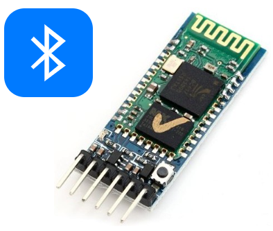
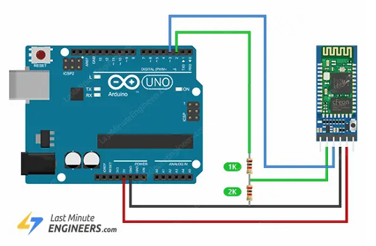
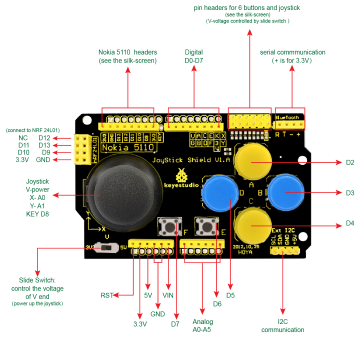
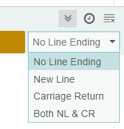
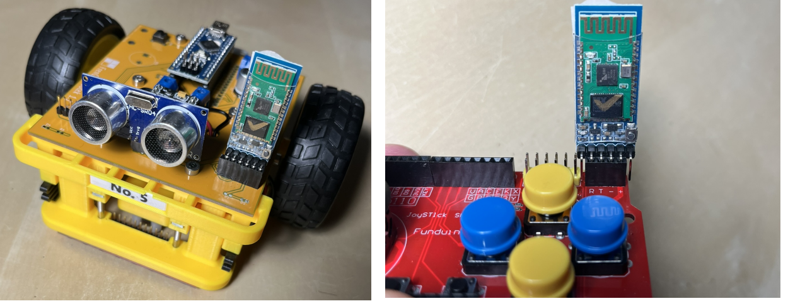

Kapitola 12: Bluetooth
Praxe – Arduino | 3. ročník · HC-05, Joystick Shield a ovládání robota
Po nastudování této kapitoly budete schopni:
- Vysvětlit princip Bluetooth a funkci modulu HC-05 jako bezdrátového UART mostu.
- Rozlišit režim AT a režim přenosu dat (Data mode).
- Správně propojit HC-05 s Arduinem a ochránit jeho 3,3V vstup RX.
- Vysvětlit, proč je nutné odpojit Bluetooth při nahrávání programu.
- Přijímat jednopísmenné příkazy funkcemi
Serial.available()aSerial.read(). - Odesílat povely z Joystick Shieldu funkcí
Serial.write(). - Bezdrátově ovládat robota dvěma Arduiny.
Klíčová slova kapitoly:
Bluetooth, HC-05, 2,4 GHz, UART, TX, RX, dělič napětí, AT mode, Data mode, master, slave, Joystick Shield, Serial.available(), Serial.read(), Serial.write().
V této kapitole propojíš dvě Arduina bezdrátově. Pomocí modulu HC-05 a Joystick Shieldu sestavíš ovladač, který bude řídit školního robota přes Bluetooth.
Co je Bluetooth?
Bluetooth je bezdrátová technologie pro komunikaci na kratší vzdálenosti v pásmu 2,4 GHz. Znáš ji například ze sluchátek, klávesnic nebo reproduktorů. S Arduinem se hodí k ovládání zařízení a přenosu údajů ze senzorů.
Bluetooth modul HC-05
HC-05 je cenově dostupný modul využívající klasické Bluetooth. Funguje jako bezdrátový UART bridge: bajty přijaté z pinu TX Arduina přenese rádiem a data z Bluetooth předá na pin RX Arduina.

Pro běžnou komunikaci nepotřebuješ zvláštní knihovnu. V programu používáš Serial.begin(), Serial.available(), Serial.read() a Serial.write().
Obecné informace: Jak fungují piny HC-05?
Pin je elektrický kontakt na desce, kterým může přicházet napájení nebo procházet signál. Modul HC-05 potřebuje dva kontakty pro napájení (VCC a GND) a dva pro přenos dat (TXD a RXD). Nejdůležitější je rozlišit, kdo data odesílá a kdo je přijímá.
Napájení (+)
Dodává modulu elektrickou energii. U běžné destičky HC-05 s regulátorem se často používá 5 V. U jiných provedení zkontroluj specifikaci.
Společná zem (−)
Referenční bod napětí. Arduino i HC-05 musí mít propojenou GND, jinak se signály nemusejí správně rozpoznat.
Transmit = vysílá
Z tohoto pinu HC-05 posílá data do Arduina. Proto vede na Arduino RX (D0).
Receive = přijímá
Na tomto pinu HC-05 přijímá data z Arduina. Proto se připojuje k Arduino TX (D1), ale přes převod úrovně na přibližně 3,3 V.
Názorné schéma: proč křížíme TX a RX?
Představ si dva lidi: jeden mluví (TX) a druhý poslouchá (RX). Vysílání jedné strany musí vždy směřovat na příjem druhé. Spojit TX s TX by bylo jako propojit dva mikrofony bez posluchače.

Co se stane, když stiskneš tlačítko ovladače?
- Ovladač: Arduino vyšle znak
'F'ze svého pinuTX (D1). - První HC-05: znak přijme na
RXDa odešle ho přes Bluetooth. - Druhý HC-05: přijme znak bezdrátově a odešle ho ze svého
TXD. - Robot: Arduino přečte znak na
RX (D0)a spustí pohyb dopředu.
Serial.write('F');HC-05 ovladačeBluetoothHC-05 robotaSerial.read()Na obou Arduinech nastav stejnou rychlost UART jako na jejich modulech HC-05 (například Serial.begin(9600); při odpovídající konfiguraci). Bluetooth spojení nahrazuje kabel mezi ovladačem a robotem, ne propojení Arduino ↔ jeho vlastní HC-05.
D0 a D1 jsou označení fyzických pinů Arduina Uno/Nano, zatímco RXD a TXD jsou názvy kontaktů na modulu HC-05. Na některých deskách najdeš také piny KEY/EN (konfigurace) a STATE (stav spojení); pro základní přenos znaků je nepotřebuješ. Před nahráváním programu HC-05 odpoj nebo vypni, protože D0/D1 sdílí sériovou linku s USB převodníkem.Zapojení HC-05 a ochrana RX
HC-05 na běžné vývojové destičce může mít napájecí vstup 5 V, ale komunikační vstup RX pracuje s logikou 3,3 V. Na RX modulu proto nepřipojuj přímo 5V TX Arduina. Použij dělič napětí nebo vhodný převodník logických úrovní.

| Arduino Uno / Nano | HC-05 | Poznámka |
|---|---|---|
| 5 V | VCC | Jen pokud má použitá deska HC-05 vhodný regulátor pro 5V napájení. |
| GND | GND | Společná zem. |
| D1 / TX | RXD | Přes dělič napětí na přibližně 3,3 V. |
| D0 / RX | TXD | Výstup 3,3 V je běžně čitelný 5V Arduinem. |
Dva režimy modulu HC-05
Ve školní sadě jsou dvojice modulů předem nastaveny: jeden jako master, druhý jako slave. Master zná adresu partnera, proto by mělo dojít k automatickému spárování.
Konkrétní chování LED, postup vstupu do AT režimu a rychlost UART se mohou lišit podle verze modulu a firmwaru.
Joystick Shield
Joystick Shield je rozšiřující deska pro Arduino. Obsahuje joystick, tlačítka A/B/C/D, další spínače a konektor pro HC-05. V této lekci bude fungovat jako dálkový ovladač robota.

| Ovládací prvek | Pin podle obrázku |
|---|---|
| Tlačítko A | D2 |
| Tlačítko B | D3 |
| Tlačítko C | D4 |
| Tlačítko D | D5 |
| Joystick – osa X/Y | A0 / A1 |
| Stisk joysticku | D8 |
Tabulka vychází z vyobrazeného modelu Keyestudio. U jiné verze Shieldu ověř potisk a dokumentaci.
Jak funguje ovládání robota?
Napíšeš dva různé programy. Ovladač bude číst tlačítka a posílat jednoznakové povely. Robot je bude průběžně přijímat a podle nich zapínat motory. Oba programy musejí používat stejnou sadu příkazů.
Serial.write('F') → HC-05 master vyšle znak.Serial.read() → robot vykoná pohyb.Ukázková tabulka povelů
| Znak | Význam | Reakce robota |
|---|---|---|
F | Forward | Jízda vpřed |
B | Backward | Jízda vzad |
L | Left | Zatáčení vlevo |
R | Right | Zatáčení vpravo |
S | Stop | Zastavení |
Mapování příkazů je návrh pro cvičení; oba programy musí být nastavené stejně.
Program pro robota
Robot kontroluje, zda dorazila data. Pokud ano, přečte jeden znak. Větvením if nebo switch rozhodne, jaký pohyb spustit.
void setup() {
Serial.begin(9600);
// Zde nastav piny motorů jako OUTPUT.
}
void loop() {
if (Serial.available() > 0) {
char received = Serial.read();
if (received == 'F') {
// Spusť oba motory pro jízdu vpřed.
} else if (received == 'B') {
// Spusť oba motory pro jízdu vzad.
} else if (received == 'L') {
// Zatoč doleva.
} else if (received == 'R') {
// Zatoč doprava.
} else if (received == 'S') {
// Zastav oba motory.
}
}
}Otestuj program nejprve přes Serial Monitor
Před připojením Bluetooth pošli do robota ručně znaky F, B, L, R, S. V sériovém monitoru zvol No line ending, aby se nepřidávaly znaky nového řádku \n a \r. Při testu přes USB měj HC-05 odpojený.

Program pro dálkový ovladač
Arduino s Joystick Shieldem čte stavy tlačítek A/B/C/D. Po stisknutí pošle povel, například R pro zatáčení doprava. Mezi odesláními je podle zadání prodleva 100 ms.
const int tlacitkoA = 2;
const int tlacitkoB = 3;
const int tlacitkoC = 4;
const int tlacitkoD = 5;
void setup() {
Serial.begin(9600);
pinMode(tlacitkoA, INPUT_PULLUP);
pinMode(tlacitkoB, INPUT_PULLUP);
pinMode(tlacitkoC, INPUT_PULLUP);
pinMode(tlacitkoD, INPUT_PULLUP);
}
void loop() {
if (digitalRead(tlacitkoA) == LOW) {
Serial.write('F');
} else if (digitalRead(tlacitkoB) == LOW) {
Serial.write('B');
} else if (digitalRead(tlacitkoC) == LOW) {
Serial.write('L');
} else if (digitalRead(tlacitkoD) == LOW) {
Serial.write('R');
} else {
Serial.write('S');
}
delay(100);
}Toto je doplňková ukázka sestavená podle zadání. Předpokládá tlačítka aktivní v logické nule a použití interních pull-up rezistorů. Ověř zapojení konkrétního Shieldu. Rychlost 9600 Bd musí odpovídat nastavení datového UART obou modulů HC-05.
S nemusí při ztrátě spojení dorazit.
Vyzkoušej Bluetooth ovládání
V této jednoduché simulaci tlačítka představují Joystick Shield. Po stisknutí odešlou jeden znak a zobrazí reakci robota. Simulace běží pouze v prohlížeči, není spojena s fyzickým Arduinem.
SLog komunikace
Lze použít i šipky na klávesnici; mezerník robota zastaví.
Samostatné praktické úlohy
Postupuj od příjmu jednotlivých znaků až k bezdrátovému ovládání. Stejně jako v předchozí kapitole nejdřív ověř jednu funkci a až potom přidej další.
Příjem povelů na robotovi
Napiš program, který zpracuje F, B, L, R, S přes Serial.available() a Serial.read(). Doplň skutečné motorové funkce pro svého robota.
Ověř: Robot reaguje na povely ze sériového monitoru; používáš No line ending.
Odesílání povelů z Joystick Shieldu
Napoj tlačítka A/B/C/D na čtyři směry. Odesílej znaky přes Serial.write() s odstupem 100 ms.
Ověř: Při stisku tlačítka se v sériovém monitoru objeví správný znak.
Bluetooth propojení dvou Arduin
Po nahrání obou programů zapoj odpovídající dvojici HC-05 master/slave. Ověř spárování a ovládání robota bez kabelu mezi deskami.
Ověř: Tlačítka na ovladači spouštějí správné směry pohybu.
Automatické zastavení při ztrátě signálu
Pomocí millis() přidej časový limit, po kterém robot zastaví motory, pokud nedostává další platné povely.
Ověř: Po vypnutí ovladače se robot bezpečně zastaví.
Shrnutí:
| Bluetooth | Bezdrátový přenos na krátkou vzdálenost v pásmu 2,4 GHz. |
|---|---|
| HC-05 | Propojuje sériovou linku UART a bezdrátovou komunikaci Bluetooth. |
| Napěťové úrovně | Vstup RX modulu potřebuje 3,3V signál; u 5V Arduina se používá dělič. |
| AT / Data mode | AT nastavuje modul, Data přenáší údaje. |
| Robot | Přijímá znaky pomocí Serial.available() a Serial.read(). |
| Ovladač | Čte tlačítka a odesílá povely pomocí Serial.write(). |
Průvodce studiem:
- Prohlédni si zapojení HC-05 a vysvětli, proč je potřeba dělič napětí.
- Porovnej AT mode a Data mode; sleduj indikaci LED.
- Nejdříve otestuj program robota po USB přes Serial Monitor.
- Samostatně zkontroluj znaky odesílané ovladačem.
- Odpoj USB sériový monitor, připoj spárované HC-05 a vyzkoušej pohyb.
- Přidej bezpečné zastavení a otestuj chování při výpadku spojení.
Kontrolní otázky:
Nejprve odpověz vlastními slovy. Rozbalením otázky ověříš správnou odpověď.
1. K čemu slouží Bluetooth v této lekci?
K bezdrátovému přenosu sériových povelů mezi ovladačem a robotem.
2. Co znamená, že HC-05 funguje jako UART bridge?
Předává data z UART bezdrátově přes Bluetooth a příchozí Bluetooth data zpět do UART.
3. Proč se nesmí TX 5V Arduina připojit přímo na RX HC-05?
RX modulu má logiku 3,3 V; příliš vysoké napětí by jej mohlo poškodit.
4. K čemu slouží AT mode?
K nastavování modulu, například názvu, PINu a role master/slave.
5. Co se děje v Data mode?
Po navázání spojení modul obousměrně přeposílá data mezi sériovou linkou a Bluetooth.
6. Proč odpojovat HC-05 při nahrávání programu do Uno/Nano?
Protože HC-05 používá stejný hardwarový UART na pinech D0/D1 jako USB převodník pro nahrávání.
7. Co vrací Serial.available()?
Počet bajtů, které čekají v přijímacím bufferu.
8. Jaký je rozdíl mezi Serial.read() a Serial.write()?
read() přečte přijatý bajt; write() odešle bajt nebo posloupnost bajtů.
9. Proč musí oba programy používat stejné znaky povelů?
Aby příjemce správně interpretoval příkaz odeslaný ovladačem.
10. Proč v Serial Monitoru vybrat No line ending?
Aby se k příkazu nepřipojovaly další znaky nového řádku.
11. Jaké piny používají tlačítka A/B/C/D na uvedeném Joystick Shieldu?
Podle schématu Keyestudio jsou to D2, D3, D4 a D5.
12. Jak zabezpečit robota při ztrátě Bluetooth spojení?
Na straně robota hlídat čas posledního platného povelu a po překročení limitu zastavit motory.
13. Proč se propojuje TX Arduina s RXD HC-05 a ne s TXD?
TX je vysílací výstup a RXD je přijímací vstup. Data z vysílače musí dorazit do přijímače. V opačném směru se spojuje TXD HC-05 s RX Arduina.
14. K čemu slouží GND a proč potřebujeme dělič napětí?
GND vytváří společnou referenci napětí. Dělič sníží 5V signál na výstupu TX Arduina přibližně na 3,3 V, aby se nepoškodil vstup RXD modulu HC-05.